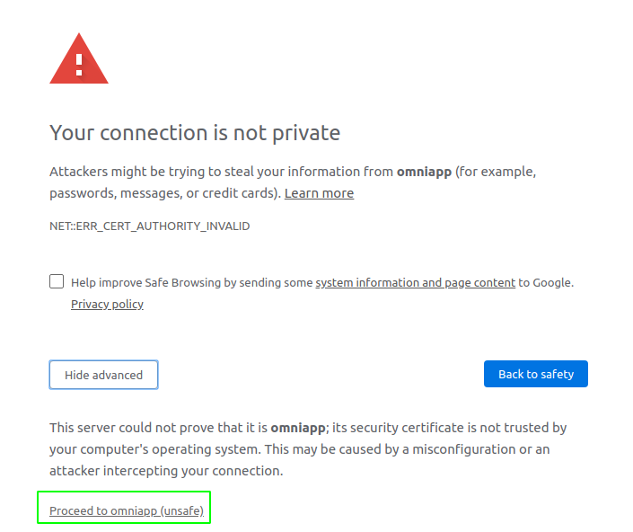
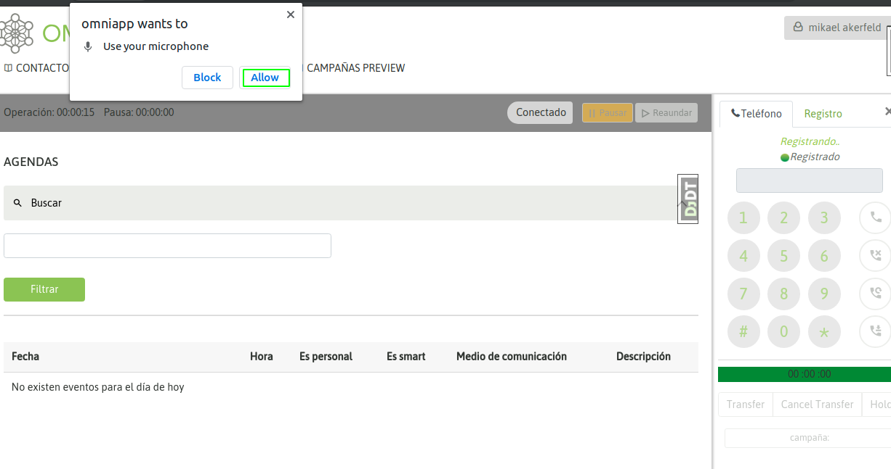
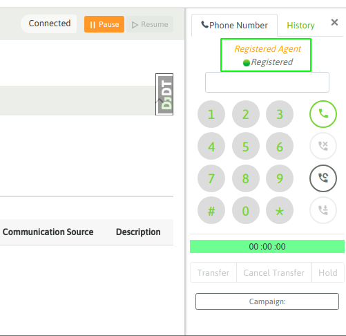
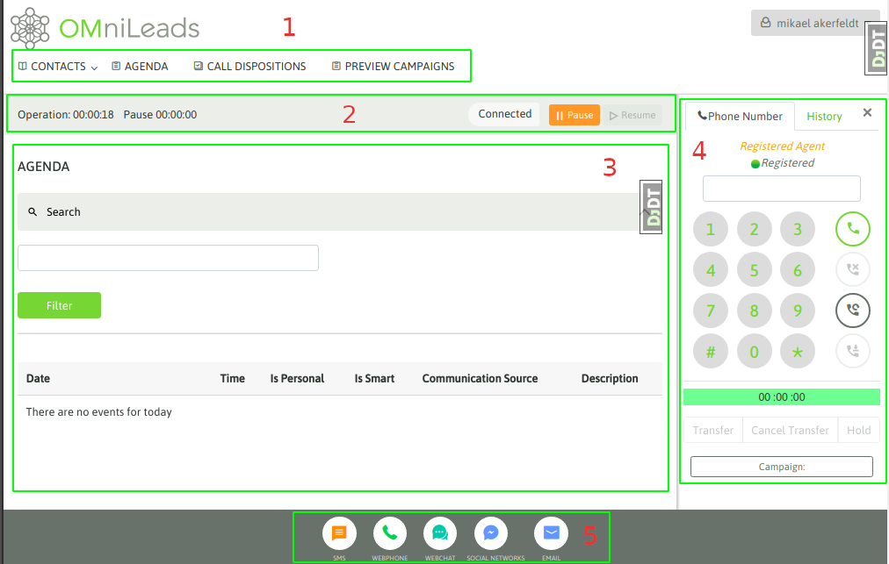
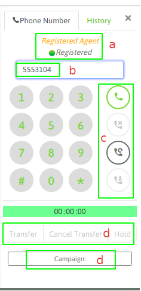

Login¶
Para acceder a la aplicación se ingresa el URL de su instancia de OMniLeads en su browser.
Si la instancia de OMniLeads no dispone de certificados comerciales, al ingresar al sistema el usuario se topa con la advertencia de seguridad correspondiente al ingreso a un sitio https con un certificado auto-firmado.
En ese caso, simplemente debe aceptar la advertencia y continuar, como lo indican las figuras 1 y 2.

Figure 1: certificate is not trusted
Figure 2: certificate is not trusted
Al avanzar sobre el sitio, se despliega la pantalla de login, en donde el agente deberá ingresar su usuario y contraseña para acceder a la aplicación.

Figure 3: login screen
Luego de un login exitoso, se despliega la interfaz de agente. Lo primero que debe suceder es una advertencia del browser que notifica que OMniLeads desea acceder al micrófono del ordenador. Por supuesto, el usuario debe permitir esta acción, ya que precisa del micrófono para utilizar la aplicación a la hora de gestionar llamadas.
Figure 4: OMniLeads wants to use your microphone
Al permir el acceso al micrófono, entonces se procede con el resto del login. Esto implica la reproducción de un «audio» sobre el auricular del agente anunciando el login exitoso.
Además el agente debe visualizar el webphone desplegado y en estado «Registered» como lo indica la figura 5.
Figure 5: Succesful agent login
La consola de agente¶
La consola de agente es el componente sobre el cual el agente de OMniLeads puede realizar toda la gestión. En la figura 6 se puede observar su aspecto y además se diseccionó en sub-componentes que son explicados a continuación.
Figure 6: the OMniLeads agent console
(1) Gestión de contactos
En esta sección encontramos las funcionalidades que permiten navegar entre los contactos de la base de las campañas, visualizar los contactos agendados para ser llamados en el futuro, listar el histórico de todas las calificaciones que fue realizando el agente y además acceder a las campañas del tipo Preview para solicitar contactos para gestionar.
Todos estos aspectos serán ampliados en las próximas secciones.
- Barra de estado
En esta barra tenemos información sobre la sesión.

Figure 7: status bar
En la barra de estado hay dos cronómetros que van contabilizando la suma del tiempo de agente en pausa y en estado de Ready. Su color cambia de acuerdo a si el agente está en estado Ready (gris), En llamada (verde) o En pausa (amarillo) y además el estado también aparce como leyenda. Finalmente aparecen los botones de pausa y des-pausa, para que el agente pueda irse a pausa y salir de la misma.
- Área de información dinámica
En esta sección de la pantalla aparece toda la información que el agente va solicitando mientras navega en la gestión de contactos, así como también los datos de los contactos en el momento en que el agente procesa una nueva llamada.
(4) Webphone
El webphone OMniLeads es el componente pricipal dentro del módulo de telefonía. A continuación vamos a repasar los botones del mismo.
Figure 8: Webphone
- a Estado del webphone. Debe siempre figurar como Registered. En caso contrario debe comunicarse con el administrador.
- b Allí se indica a qué número realizar una llamada manual.
- c Estos botones permiten disparar la acción de: llamar, cortar, re-llamar al último número y marcar una grabación. El botón de marcar una grabación será explicado más adelante.
- d Este botón permite modificar la campaña sobre la cual se procesa cada llamada manual. También se abordará más adelante en la sección «campañas manuales».
(5) Dock
El dock expone cada herramienta de comunicación. En la versión actual SOLAMENTE está funcional el webphone ya que OMniLeads actualmente soporta solamente llamadas telefónicas, en versiones futuras se comenzarán a activar otros componentes.
Pausas¶
El agente puede ingresar en modo pausa para que ninguna llamada de campañas entrantes o predictivas pueda ingresarle. Como bien se explica en la sección de «Configuración inicial», existen diferentes tipos de pausas que el administrador puede generar y mantener en el sistema. Por lo tanto el agente al ingresar en el estado de pausa, debe indicar a qué tipo de pausa.
Para ingresar en una pausa se debe hacer click en el botón «Pausa» dentro de la barra de estado del agente.

Figure 8: Pause
Se despliega entonces el menú de selección del tipo de pausa.

Figure 9: Pause class
Finalmente, el agente entra en pausa. Debe notarse como cambia hacia el color «amarillo» la barra de estado, además en la barra se puede leer el tipo de pausa actual y finalmente se puede observar que el cronómetro de tiempo de pausa comienza a correr, mientras que el de tiempo de operación se frena.

Figure 10: On Pause
Logout¶
Para efectuar un logout se debe acceder al vértice superior izquierdo, tal como lo expone la figura 9.

Figure 11: agent logout